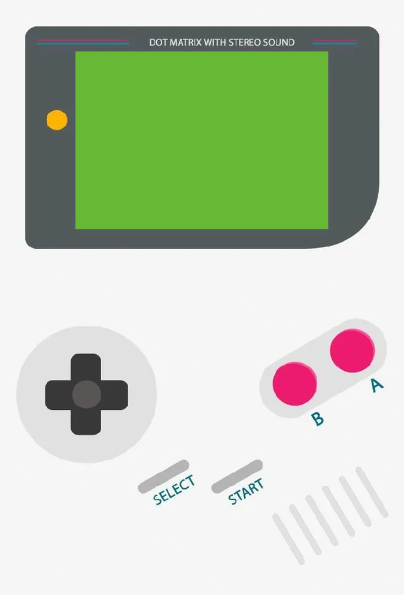

WebBoy
Javascript not enabled! Please enable it or switch to a newer Browser

Your Browser does not support the Canvas
Select your ROM!
Reset
Stop
Pause
Set Emulation Speed (1 - 200%)
Current Emulation Speed: 100%
Information